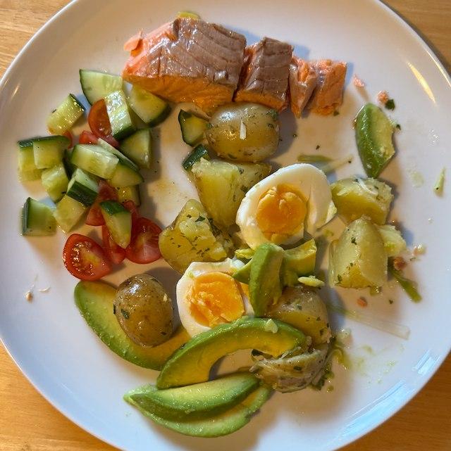

Trout Salad

Serves: 4
Cook Time: 30 min
From Hello magazine circa 2000. Serve with tomato and cucumber salad.
Ingredients
- 500g new potatoes
- 4 eggs
- 4 trout fillets
- 150ml fish stock
- 4 spring onions, cut in fine strips
- 1 avocado
- ½ lemon, juice
- Dressing
- 1 tsp dijon mustard
- ½ lemon, juice
- 5 tbsp sunflower oil
- 1 tbsp parsley, chopped
- salt and pepper
Method
Potatoes. Boil potatoes in 1.5 litre water with 1 tbsp table salt. Takes about 25 min.
Eggs. Boil eggs for 10 min. Drain, cool, shell and quarter.
Fish. Poach fish in stock until just opaque, about 5 min. Lift out and drain, remove skin and visible bones. Break into pieces.
Avocado. Squeeze lemon juice into a dish. Quarter avocado, remove stone and skin. Slice and place in the lemon juice, to stop browning.
Dressing. Whisk together the dressing ingredients.
Assemble. Break potatoes a bit and mix with dressing. Stack potatoes, fish, avocado, eggs, spring onions on the plate.